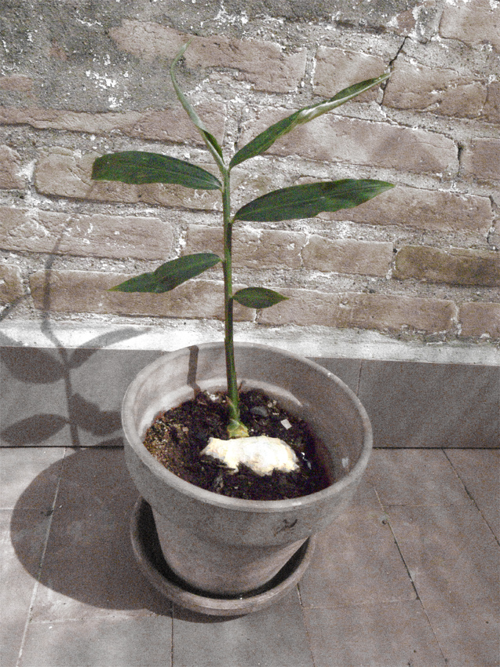

Pinterest
Instagram
ES
EN
DE
☰ Menú
Inicio
La casa
Accesorios
Decorar
Instrucciones
Ilustración
Cantimploras personalizadas
Cuaderno de manualidades y actividades 01
App Not Online Anymore
Blog
Fiestas
Navidad
Pascua
Halloween
Carnaval y disfraces
San Valentín
Cumpleaños
Día de la Madre/Padre
Vuelta al cole
Estaciones
Primavera
Verano
Otoño
Invierno
Qué hacer
Juguetes
Juegos
Imprimibles
Recetas y comida
Decoración
Pintar
Experimentos
Al aire libre
Aprender
Animales
Regalos y joyas
Construir y trucos
Otras manualidades
Material
Papel
Cartón
Rollos de papel
Reciclaje
Piedras
Hojas y naturaleza
Tela, coser y tejer
Inicio
›
Blog
›
Exterior
Exterior
Categoría
Juguete
Coronas
Juguete
Cabaña de hojas de palmera
Juguete
Cocodrilo de conchas
Ocasión
Bloques de hielo
Juguete
Laberinto de arena
Exterior
Poción mágica
Exterior
La Lonja de la Seda
Fruta
Piedras con el nombre de las plantas
Exterior
Caminar raro
Exterior
Jardín en un platillo
Exterior
Arte en el paisaje
Exterior
Plantar jengibre

Juguete
Arco de avellano
Exterior
Saltando formas por la ciudad
Piedras
Torres de piedras en la playa
Exterior
Invernadero en una bolsa
Exterior
Pompas gigantes
← Más recientes
Página 2 / 2